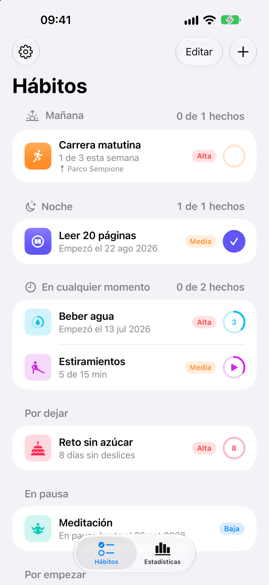
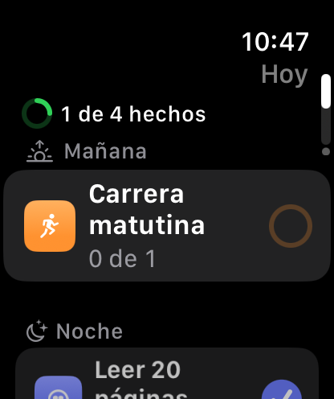
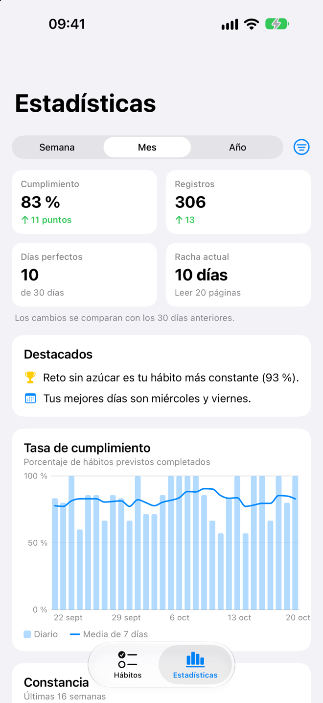
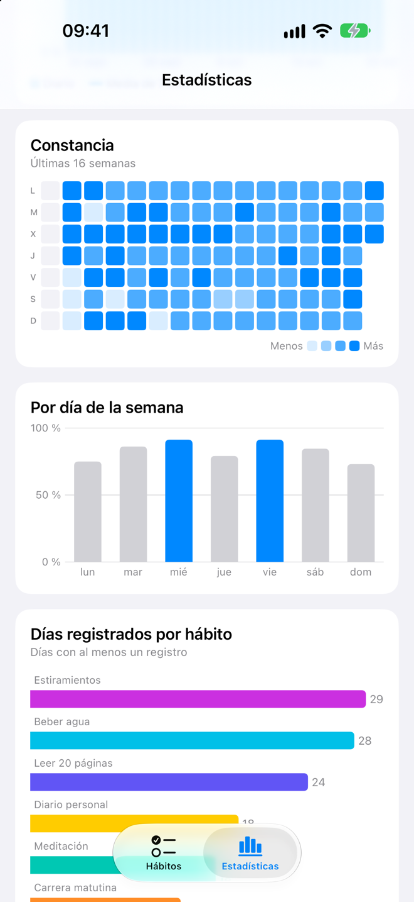
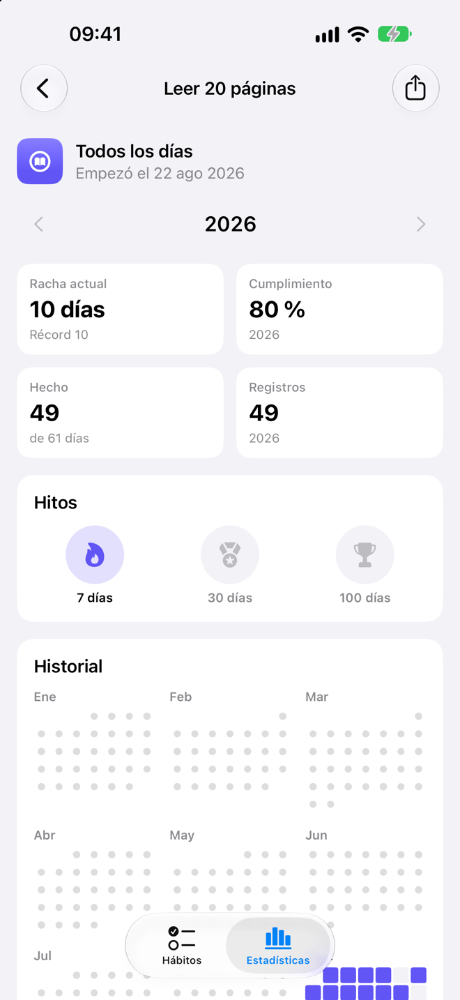
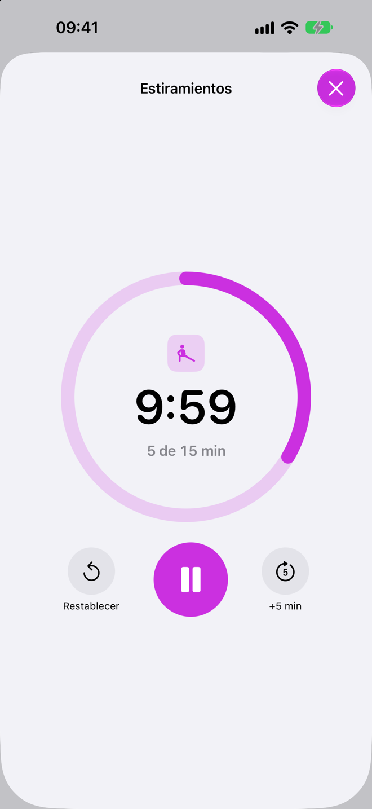
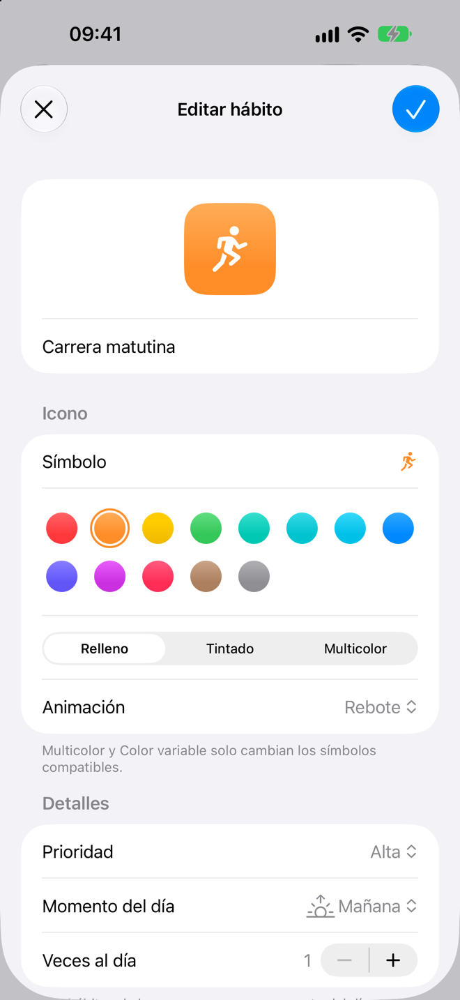
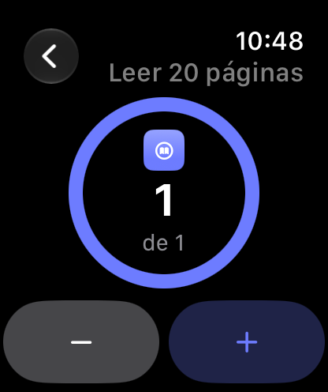

Hábitos a tu manera
Elige un icono, un color y una animación. Repite los días que quieras o 3 veces por semana en cualquier día, una vez al día o varias, como 8 vasos de agua.
Registra cada día, recibe un recordatorio cuando lo necesites y mira cómo crecen tus rachas. Un registro de hábitos sencillo y privado para iPhone, iPad, Mac y Apple Watch.
Muy pronto en el App Store.


Sigue los hábitos que quieres crear y los que quieres dejar atrás, a tu manera.
Elige un icono, un color y una animación. Repite los días que quieras o 3 veces por semana en cualquier día, una vez al día o varias, como 8 vasos de agua.
Organiza tu día en Mañana, Tarde y Noche, y arrastra tus hábitos al orden que prefieras.
Para hábitos que se miden en minutos, como leer 30 minutos al día. Inicia y pausa desde la lista o desde tu muñeca, y recibe un aviso cuando termines.
Tabaco, azúcar, el móvil hasta tarde: cuenta los días sin deslices desde el último.
Uno al día, o repartidos durante el día («3 de 8»), con los botones Hecho y Registrar en la propia notificación.
Omite un día de enfermedad, pausa un hábito o todos durante las vacaciones, sin romper tus rachas.
Porcentaje de cumplimiento, rachas, un mapa de constancia, tus mejores días de la semana y un calendario del año para cada hábito.
Celebra las rachas de 7, 30 y 100 días, y comparte una racha como imagen.
«Registrar Carrera matutina en HabitTracker», o pregunta «Qué me queda hoy en HabitTracker». También funciona en Spotlight y con el botón de acción.
Tus hábitos en una barra lateral, con las estadísticas de cada uno al lado, y atajos de teclado en el Mac.
Exporta todo a CSV para una hoja de cálculo, y haz copias de seguridad y restáuralas con la app Archivos.
Seis iconos para la app, y la app en English, Italiano, Français o Español, sea cual sea el idioma de tu dispositivo.
Diseñada para iOS 26, con Liquid Glass, respuesta háptica y VoiceOver en todas partes.





Desliza hacia un lado para ver más.
La app para Apple Watch muestra los hábitos de hoy y se sincroniza con tu iPhone, para que registres sin sacar el teléfono.

HabitTracker no recoge ningún dato. Lo que registras queda entre tú y tus dispositivos.
Abre la app y empieza. No hay que registrarse en nada.
Sin anuncios, sin analíticas y sin código de terceros.
Tus hábitos se guardan en tu dispositivo, y el Apple Watch se sincroniza directamente con tu iPhone.
¿Preguntas, ideas o algo que no funciona como debería? Escríbenos un correo y te responderemos.
Ya casi está: primero llegará una beta en TestFlight y después el App Store. Esta página enlazará a ella en cuanto salga.
iPhone y iPad con iOS 26 o posterior, Mac con macOS 26 o posterior, y Apple Watch con watchOS 26 o posterior, enlazado con un iPhone.
Sí: Ajustes › Soporte › Contactar con soporte prepara un correo con detalles que nos ayudan a encontrar un problema, como la versión de la app, tu dispositivo y la versión de iOS. Nunca incluye los nombres, las notas ni los lugares de tus hábitos, y ves todo antes de enviarlo.
En Ajustes › Copia de seguridad, elige Hacer copia en Archivos y guarda el archivo en un sitio al que llegues desde el iPhone nuevo, como iCloud Drive. Después, en el iPhone nuevo, elige Restaurar copia de seguridad.
Sí. Desliza un hábito y elige Omitir hoy, activa En pausa al editar un hábito, o usa Ajustes › Vacaciones para pausarlos todos. Los días en pausa nunca cuentan como no cumplidos.